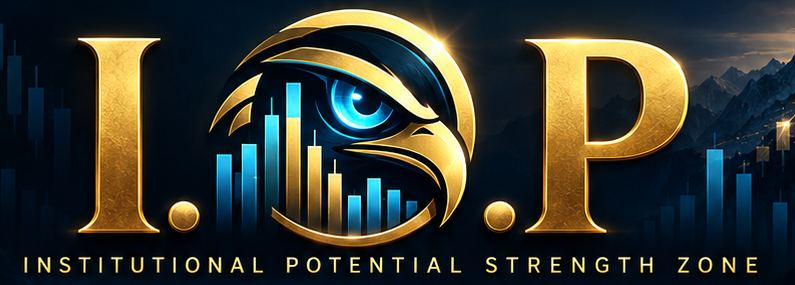
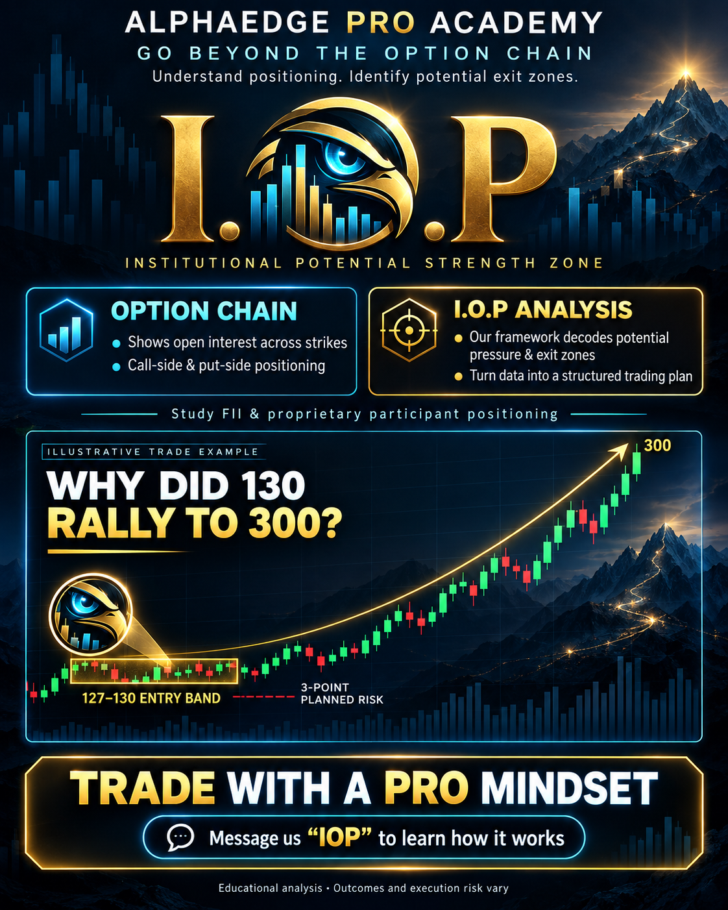

Move from reading option-chain positioning to understanding potential pressure zones. Study the participants, the 127–130 premium-band example, the supplied 22500 PE chart, and a structured plan for gaps and zone-to-zone moves.
Separate participant context and open interest from private exit orders.
Read I.O.P potential strength zones and the supplied premium example.
Use zones to define observation, confirmation, invalidation and reassessment.
Based on AlphaEdgePro’s I.O.P Explained guide. This chapter brings its explanation, chart and illustrations into the bootcamp sequence.
THE INSTITUTIONAL POTENTIAL STRENGTH ZONE
The option chain shows positioning. I.O.P asks what happens next.
Where could option sellers come under pressure? At what price might that pressure turn into an exit? AlphaEdgePro’s I.O.P framework translates our interpretation of market data into potential zones you can understand and watch.
For normal traders ready to develop a pro mindset.

INSTITUTIONAL POTENTIAL STRENGTH ZONE
FROM POSITIONING TO POTENTIAL PRESSURE TO A STRUCTURED PLAN
01 / FIRST, UNDERSTAND THE PLAYERS
Who are FII, Pro, DII and normal traders?
The starting idea is simple: understand the participants with meaningful positions before reacting to every candle. The I.O.P option-analysis lens focuses particularly on FII and Pro activity.
FII / FPI
Foreign institutional investors
These are overseas institutional investors. Their derivatives positions may express a market view, hedge an investment, or form one part of a larger strategy. Their activity is useful context; it is not a promise that the market will move in their favour.
PRO
Proprietary trading participants
“Pro” refers to the proprietary account category: trading members trading their own account. It does not simply mean any skilled trader. Such participants can use options for trading, hedging and arbitrage, so a single position may not reveal their complete intention.
DII
Domestic institutional investors
These are institutions based in India. This approach gives DII activity less emphasis in option analysis than FII and Pro positioning. That is the framework’s focus, rather than a claim that DII has no role. Its actual participation should be checked for the relevant instrument and period.
NORMAL TRADER
The individual learning to read data
A normal trader may look at the option chain, compare call and put open interest, and try to identify support or resistance. An advanced trader may add calculations. Both are trying to answer the same question: “Where is positioning concentrated, and what could that mean for my next decision?”
02 / WHAT YOU CAN ACTUALLY SEE
“Where are people standing?” That is the starting point.
Imagine looking at a map showing where a crowd has gathered. You can see the crowded places. You cannot see every person’s reason for being there, or the exact moment they will leave.
An option chain is a useful positioning map. It organizes call and put contracts by strike price and expiry, with fields such as open interest, changes in open interest, volume and traded prices.
The phrase “how many people are standing there” makes the idea easy to understand. Technically, open interest counts outstanding contracts, not unique people. One participant can hold many contracts, and every open contract has a buyer and a seller.
A positioning map
Illustrative OI only • not live market data
Call OIStrikePut OI
22,400
22,450
22,500
22,550
More OI means more open contracts at that strike. It does not identify every holder or their exit price.
What is a call seller?
A call seller sells a call option and receives a premium. If that option’s premium rises, an unhedged short call becomes more expensive to buy back. The seller may close, adjust, hedge, or continue holding. A covered or spread position can behave differently.
What is a put seller?
A put seller sells a put option and receives a premium. If that put’s premium rises, an unhedged short put becomes more expensive to buy back. Selling a put is not the same as buying one: the short seller and the option buyer face different risks.
Traders often associate call-side concentrations with resistance and put-side concentrations with support. These are interpretations to test against price behaviour, not automatic conclusions from OI alone.
03 / THE QUESTION BEYOND OI
Seeing a position is different from understanding its pressure point.
“At which level or price could the sellers begin to exit?”
This is the deeper question behind what AlphaEdgePro calls “real pro data.” Knowing where contracts exist is only the beginning. The framework aims to interpret where their behaviour could change.
What a trader asks
What the data or analysis can tell them
Where is OI concentrated?
The option chain shows outstanding contracts at different strikes.
Is positioning increasing or decreasing?
OI changes show the net change in open contracts; price and volume add context.
Who holds those positions?
Separate participant reports provide category-level context. The ordinary option chain does not identify every holder at every strike.
Where will a specific seller exit?
The chain does not disclose that seller’s stop, entry cost, hedge or exit order.
Where could pressure develop?
This is the analysis layer: I.O.P aims to estimate potential zones and then observe price behaviour around them.
We use the word potential deliberately. A pressure zone is an interpretation of available information, not access to an institution’s private orders.
04 / WHAT AlphaEdgePro HAS BUILT
I.O.P makes the analysis easier to follow.
We call our framework I.O.P — Institutional Potential Strength Zone. Instead of leaving the trader with a screen full of figures, we aim to share interpreted zones: places where positioning and price behaviour may become important.
1
Institutional
The analytical lens focuses on larger participant positioning, particularly FII and Pro context. It asks how significant positions may interact with price, rather than assuming every candle is a fresh signal.
2
Potential
A zone describes a possibility to watch. The trader still needs to see whether price holds, rejects, breaks or fails there. A potential scenario becomes useful only when its conditions and invalidation are clear.
3
Strength zone
A band of prices gives the trader an area of interest. Strength means the behaviour observed around that area, such as holding a level or moving through it. The band is a reference for decisions, not a guaranteed bounce.
DATAPositioning and market context
INTERPRETATIONOur I.O.P analytical framework
ZONEA potential area to observe
DECISIONConfirmation, risk and review
“Decode and share” means translating our analysis into understandable reference zones. It does not mean that the option chain directly exposes hidden institutional exits. The proprietary calculation rules are not published here; this page explains the concept and the questions it is designed to answer.
05 / THE PREMIUM EXAMPLE, STEP BY STEP
Why a 127–130 band? How could 130 become 300?
The founder’s example describes an option premium moving from 130 to 300 after attention was focused on a narrow 127–130 band. These are option prices, not NIFTY index levels.
ILLUSTRATIVE PREMIUM PATH130 → 300
Conceptual visual of the example supplied by the founder. See the supplied 22,500 PE chart below for the visual example; the schematic above is illustrative.
1. The band creates a reference
Instead of watching the whole market without a plan, the trader watches how the option behaves around 127–130. Does it hold the band? Does it move above 130? Does it fall below the area? The band gives those questions a concrete location.
2. Three points describes planned risk
For an illustrative entry at 130 and exit reference at 127, the difference is 130 − 127 = 3 premium points. A three-point-wide band does not automatically create a three-point-risk trade. That depends on the actual entry and exit rule.
3. Rising premium can pressure sellers
An unhedged seller who sold at 130 would have to pay more to buy back if the premium rises. Some sellers may close by buying back their contracts. That buying can add demand. Other buyers, volatility and movements in the underlying can also contribute to the rise.
4. A move to 300 is the outcome
The premium change in this example is 300 − 130 = 170 points. Dividing by three gives about 56.7 times the planned risk before costs. This is example arithmetic, not an expected return, verified trade result or claim that every zone produces that move.
The useful question is not only “How far did it rally?” It is “What was the plan before it rallied?”
THE SUPPLIED CHART / SEE THE ZONES IN CONTEXT
From the 127–130 zone to the upper rejection areas.
This supplied chart shows a NIFTY 22,500 put option with 6 October 2026 expiry on a one-minute timeframe. The expiry date identifies the contract; it does not establish the date of the trading session shown.
Tap the chart to view the full-size image. Labels are the founder’s annotations, not independently verified trade executions.
FIRST / THE REFERENCE BAND
“Eagle Eye 127–130 Zone”
The yellow lines at 127 and 130 mark the starting band. The chart shows price moving around that area before advancing. For a beginner, the key lesson is to identify the reference area first and then study the response, rather than chase the rally after it is obvious.
NEXT / MANAGE THE IDEA
The 150–154 area
The green lines and check mark show the next annotated area. The chart calls it “Risk Covered, Capital Safe, Reward Open.” In the founder’s explanation, that means managing the position after a favourable move. The screenshot does not establish the actual entry, stop adjustment or realised profit; “capital safe” should not be read as a guarantee.
THEN / A REJECTION AND A RETEST
The 254–260 zone
The first rally reaches the red area near 254–260, followed by a sharp pullback. The annotation says “Rejection and PE Booked at Top.” Later, price returns toward this area and moves above it. The same zone can produce a rejection on one visit and a break on another, which is why the price response matters.
FINALLY / REASSESS AT THE UPPER AREA
Near 300 and TG3
The later rally reaches the upper red area near 300, then reverses. “Rejection at TG3, Eye on CE Side” is the founder’s cue to reassess the put-side move and observe the call side. A PE rejection alone is not confirmation of a CE entry; the call-side setup needs its own conditions.
What this image clarifies: the example is a sequence of zones, reactions, pullbacks and reassessment points. It is not a straight-line promise from 130 to 300. The screenshot shows price behaviour and annotations; it does not reveal the identity or exact exit orders of institutional sellers.
GAP UP OR GAP DOWN / PREPARE WITH A PLAN
Why fear gap-ups and gap-downs? Prepare with I.O.P by your side.
A gap can make a normal trader feel that the opportunity is already gone—or that the market is about to move against them. I.O.P’s purpose is to give you reference zones and a way to assess the opening, so your next decision comes from a plan.
If the market opens with a gap up
A gap up means the underlying opens above its previous close. First locate the opening price relative to the relevant zones. Watch whether it holds above an area, rejects from resistance, or returns for a retest. Check the actual CE and PE premiums; their reactions also depend on volatility and time decay. A gap up by itself is not an entry signal.
If the market opens with a gap down
A gap down means the underlying opens below its previous close. Locate the opening relative to potential support and resistance. Observe whether support holds, a breakdown continues, or price recovers a reference zone. Reassess the option you intend to trade and wait for the setup’s conditions before acting.
The opening tells you where the market begins. Your zones help you decide what to observe next.
Before the session, understand your reference zones. At the open, compare them with the actual prices. Then define confirmation, invalidation and position size. If the opening skips a zone or invalidates the idea, reassess rather than force the original trade.
I.O.P supports preparation; it does not remove gap risk. Prices can jump beyond a planned stop, and an option premium can react differently from the underlying. Use the gap as information, not as a reason to abandon risk control.
A sequence of reference zones. A clearer way to observe.
The phrase “dot to dot” describes an observation within the I.O.P framework: price can move from one interpreted zone to another. The objective is to recognize those areas ahead of the decision, then assess what price does when it reaches them.
For a normal trader, this turns an overwhelming screen into a sequence of questions: Where should I pay attention? What confirms my idea? What proves it wrong? Where should I reassess? A zone may hold, fail, be skipped or be revisited. The phrase does not mean every market move follows fixed levels.
At the first zone
Observe the response. A level matters because of behaviour around it, not simply because a number has been marked.
Between zones
Follow the conditions of the original idea. A pullback does not automatically mean failure, and momentum does not remove the need for risk control.
At the next zone
Review strength, rejection and your exit plan. Reaching a reference area is a reason to reassess, not an instruction to expect another rally.
FROM NORMAL TRADER TO PRO MINDSET
Read the chain. Understand the zone. Make a plan.
The message “Now trade with Pro” is an invitation to develop a more structured approach. It means learning to interpret participation and pressure, instead of entering simply because a premium has started moving.
I.O.P’s proposed value is the bridge between raw positioning data and actionable questions. The trader gets a clearer area to observe, a possible scenario to evaluate and a place to define when the idea is no longer valid.
Identify the exact instrument, strike and expiry.
Understand whether the marked number is an option premium or an underlying index level.
Know the potential zone and what price behaviour you are waiting for.
Define entry, invalidation and position size before acting.
Review the outcome and whether the original conditions were actually met.

The I.O.P idea, at a glance.
BEGINNER QUESTIONS / SIMPLE ANSWERS
Questions a beginner may ask.
Is I.O.P just another option-chain table?
The concept described here is an interpretation layer. The option chain supplies strike-level market data; I.O.P aims to turn analysis into potential strength and pressure zones. Ask for a demonstration to see the actual zone output and how it is used.
Does more call OI mean the market must fall?
No. OI tells you how many contracts remain open. It does not reveal the complete strategy behind them. Call positions can form part of hedges and spreads, and price can move through a crowded strike.
Can I see an institution’s exact stop-loss?
No. Ordinary public option-chain data does not reveal individual stop-loss orders or private exit plans. I.O.P zones are analytical estimates of potential behaviour.
Does the 127–130 band always lead to 300?
No. It is the example you are being shown, not a universal rule. Its value for learning is the relationship between the reference band, the planned risk and the subsequent move. Review the supplied chart and establish the trading-session date and execution records to assess the specific example.
What should I ask before using the framework?
Ask which data is used, when zones are calculated, whether they can change, what confirms an entry, what invalidates the idea, and how failed examples are handled. A complete demonstration should show the rules as well as the successful move.
TAKE THE NEXT STEP
Understand what we have built. Then decide how it fits your trading.
Ask AlphaEdgePro for an I.O.P walkthrough: how the zone is read, what the 127–130 example means, and how to approach the data with a pro mindset.
WhatsApp AlphaEdgePro: +91 9173905201. Your enquiry opens in WhatsApp; review it before sending.
Chapter 12 takeaway: The option chain shows contract positioning; participant reports add category-level context. I.O.P interprets potential pressure and strength zones. Use the marked bands to observe the price response, define confirmation and invalidation, and reassess at the next zone. Apply Chapter 11’s execution and stop-planning discipline when evaluating an entry.
PRACTICE CHECKPOINT
Explain the zone before the outcome.
Describe what OI reveals and what it cannot reveal. On the supplied 22500 PE chart, identify the 127–130 band, 150–154 management area, 254–260 rejection zone and upper area near 300. Write the confirmation and invalidation you would have required, and distinguish a chart annotation from a verified execution.